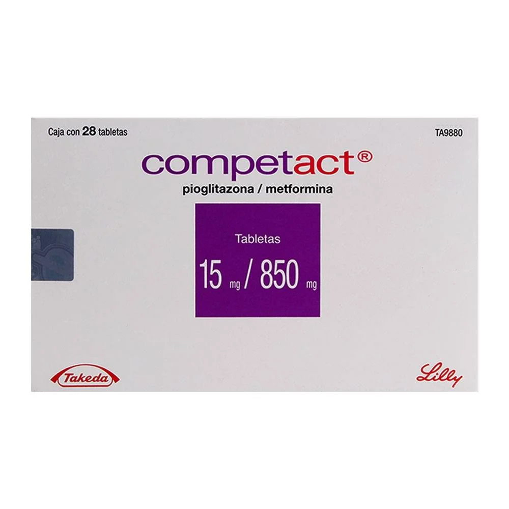
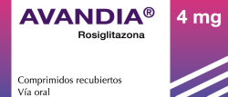

La pioglitazona está indicada como adyuvante a la dieta y el ejercicio para mejorar el control glucémico en pacientes con diabetes tipo 2 que no logran un control adecuado con metformina sola, que ya están en tratamiento con pioglitazona y metformina, o que inicialmente respondieron a pioglitazona pero requieren un control adicional. El manejo integral de la diabetes tipo 2 debe incluir asesoramiento nutricional, reducción de peso y ejercicio. Se recomienda evaluar la respuesta al tratamiento cada 3 a 6 meses.
está contraindicado en pacientes con insuficiencia renal, insuficiencia cardiaca (NYHA I-IV), cáncer de vejiga activo o antecedente de este, y hematuria macroscópica no investigada. No debe usarse en caso de acidosis metabólica (incluyendo cetoacidosis diabética) ni en personas con hipersensibilidad a pioglitazona, metformina o sus componentes. Debe suspenderse temporalmente antes de estudios con materiales de contraste iodados debido al riesgo de alteración renal.
Tabletas/vía oral
Pioglitazona
La terapia con pioglitazona/metformina debe individualizarse según la eficacia y tolerabilidad del paciente, sin exceder las dosis máximas diarias: pioglitazona 45 mg y metformina 2,550 mg. Se administra por vía oral en dosis divididas con los alimentos para reducir efectos gastrointestinales.
Dosis inicial recomendada:
Pioglitazona (marca COMPETACT), rosiglitazona (poco usadas por efectos adversos cardiovasculares).
Interacciones que aumentan el efecto adverso de metformina. Estas interacciones pueden aumentar los niveles plasmáticos de metformina o su toxicidad:
Interacciones que pueden reducir su eficacia
Rifampicina: inductor enzimático (CYP2C8), puede reducir las concentraciones plasmáticas de pioglitazona -> disminución del efecto hipoglucemiante.
La pioglitazona, utilizada para la diabetes tipo 2, puede aumentar el riesgo de hipoglucemia cuando se combina con otros agentes, provocar retención de líquidos, incrementar el peso corporal y en algunos casos estimular la ovulación. Se ha asociado con insuficiencia cardíaca congestiva, efectos hepáticos, edema macular y fracturas óseas en mujeres. Existe una pequeña pero posible asociación con cáncer de vejiga. Por su parte, la metformina puede reducir los niveles de vitamina B12, aunque este efecto suele revertirse con suplementación. Se recomienda monitorización clínica en pacientes tratados con estos medicamentos.